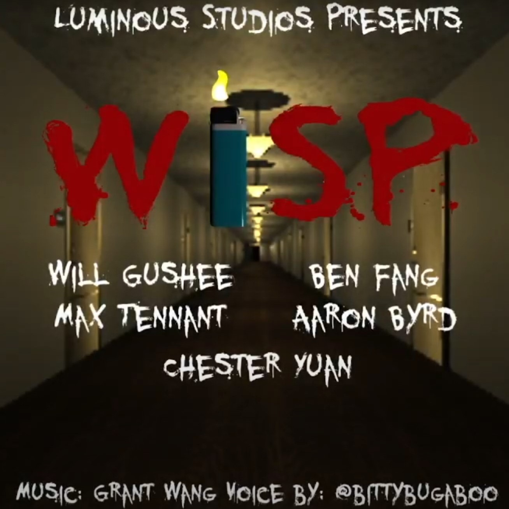

Will Gushee, Ben Fang, Max Tennant, Aaron Byrd, Grant Wang(Music)
Using tools: C#, Unity3D
Wisp is a first person adventure horror game set in the eerie confines of a haunted college dormitory. Using only the power of your trusty lighter, you must solve puzzles, interact with the environment around you, and navigate the shadowy corridors as you try to escape with your life.
Mainly responsible for level process design, level logic implementation(decryption room), object interaction logic implementation (such as photosensitive material text, keypad, and so on), dialogue logic and effect implementation, ending cutscenes. And also work with my teammates fixing various issues.
